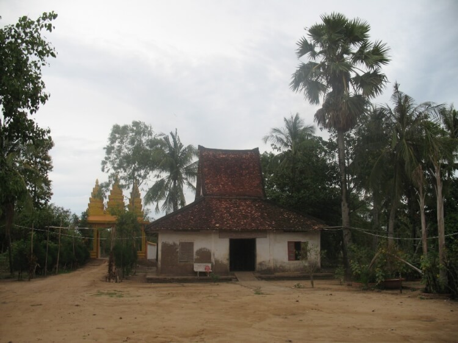
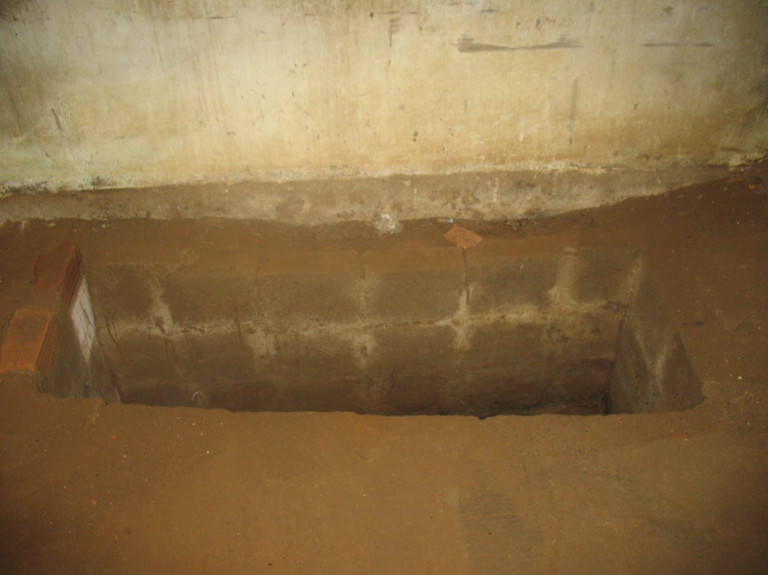
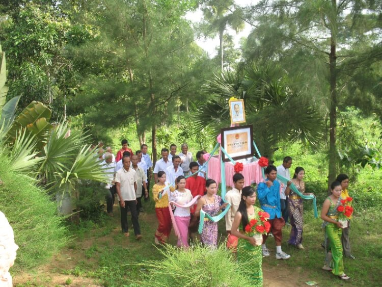
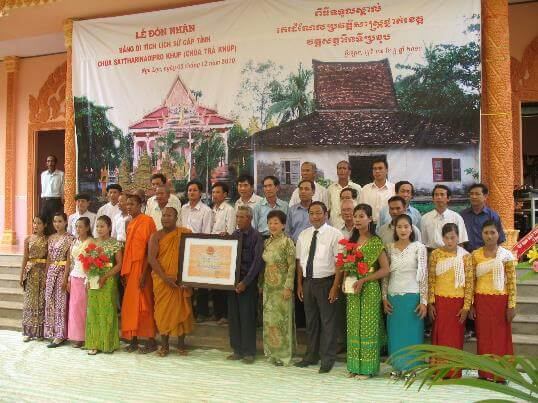

Di tích chùa Sattharinadi Pro Khup (Trà Khúp) tọa lạc cách trung tâm thành phố Trà Vinh khoảng 40km về hướng Đông Nam, cách huyện Duyên Hải khoảng 15km về hướng Tây thuộc ấp Trà Khúp, xã Ngũ Lạc, huyện Duyên Hải, tỉnh Trà Vinh.
Chùa Trà Khúp được xây dựng vào năm 2431 Phật lịch, tức năm 1887 dương lịch trong khuôn viên rộng 41.000m2
Trong cuộc kháng chiến chống Pháp, ngay từ những ngày đầu Chi bộ xã Đôn Châu thành lập, Chi bộ nắm được ý đồ của địch là lợi dụng vấn đề dân tộc tôn giáo và dựa vào các chùa để chia rẻ đồng bào, chống phá cách mạng nên đã đến các chùa xây dựng cơ sở. Đối với chùa Đom Bon Bak, đồng chí Trần Văn Khôi - Bí thư Chi bộ bàn với sư cả Kim Nhiêu Kem chọn chùa làm cơ sở hoạt động hợp pháp, làm nơi nuôi chứa cán bộ đồng thời vận động các nhà sư lập ra Ban Tăng sự yêu nước tỉnh.
Từ năm 1947, dưới sự trụ trì của sư cả Thạch Khmau chùa Trà Khúp đã là cơ sở hoạt động bí mật của cách mạng.
Năm 1950, đồng chí Nguyễn Ngọc Thanh – Bí thư Tỉnh ủy Trà Vinh đến chùa làm việc với sư cả Thạch Khmau, từ đó sư cả trở thành cơ sở đơn tuyến để nhận các chỉ thị, nghị quyết của Đảng và tổ chức gầy dựng cơ sở, phát động phong trào đấu tranh trong sư sãi, bà con phật tử.
Năm 1957, Tỉnh ủy phân công đồng chí Trần Lái – cán bộ Khmer vận của tỉnh đến công tác tại xã. Đồng chí đã chọn chùa Trà Khúp làm đầu mối để quan hệ chỉ đạo với cơ sở các chùa trong tỉnh, đồng thời là chỗ dựa để cơ sở sư sãi ở các nơi đến làm việc.
Trong phong trào Đồng khởi 1960, các vị sư và phật tử chùa làm nhiều trống mõ, tham gia nổi dậy cướp chính quyền, giải tán bộ máy tề xã, đồng bào, sư sãi san bằng đồn giải phóng xã nhà vào chiều ngày 17/9/1960.
Năm 1961, dưới sự chỉ đạo của Chi bộ xã Ngũ Lạc các vị sư cùng phật tử chùa Trà Khúp đã tham gia nhiều cuộc biểu tình tại huyện Cầu Ngang, Châu Thành và tỉnh lỵ Trà Vinh.
Đêm 17/3/1963, Mặt trận Dân tộc Giải phóng huyện tổ chức họp dân tại chùa dưới sự chủ trì của Acha Kim Lục Phát, Chủ tịch Mặt trận huyện và sư cả Thạch Khmau để tuyên truyền chủ trương, đường lối của cách mạng.
Ngày 05/3/1966, địch mở trận càn quét vào ấp Lạc Hòa, sau một ngày chiến đấu với địch, 33 chiến sĩ của ta hy sinh, nhà chùa đã hiến ván gỗ để các vị sư đóng quan tài và đem xác chiến sĩ về mai táng ở nghĩa trang xã.
Hầm bí mật trong Sala Mêl
Tháng 7/1970, cán bộ ta đến liên hệ công tác tại ấp Trà Khúp, địch phát hiện bắn bị thương đã chạy vào chùa và được các vị sư Thạch Rơn, Thạch Lung, Thạch Dết, Thạch Tiền băng bó rồi đưa xuống hầm bí mật ẩn tránh.
Cuối năm 1972, Chi bộ sư sãi chùa Trà Khúp có 23 đảng viên do sư cả Thạch Dương làm Bí thư. Sang năm 1973, sư cả Thạch Dương cùng với các vị sư Thạch Chênl, Thạch Vòi, Thạch Hôi đều là đảng viên đã tổ chức đào hầm bí mật tại sa la Mênl nơi ở của sư cả Thạch Dương để nuôi chứa cán bộ cách mạng.
Năm 1973, sư cả Thạch Dương, sư Thạch Thonl tổ chức cuộc vận động sư sãi tham gia cách mạng, có 15 sư sãi hoàn tục tham gia trong nhiều ngành của huyện, tỉnh và vào các đơn vị D509, D501, D512.
Với tinh thần “tất cả cho kháng chiến, tất cả để chiến thắng”, nhà chùa đã vận động quần chúng nhân dân đóng góp nhiều lúa gạo, tiền bạc, của cải nuôi quân kháng chiến. Riêng chùa đã hiến nhiều tiền bạc, lúa gạo và hàng chục cây dầu, cây sao phục vụ kháng chiến.
Trong hai cuộc kháng chiến chùa Trà Khúp đã nuôi chứa và bảo vệ nhiều cán bộ cách mạng tiêu biểu như: Đồng chí Nguyễn Ngọc Thanh – nguyên Bí thư Tỉnh ủy Trà Vinh, Trần Thành Đại (Ba Mới) – nguyên Bí thư Tỉnh ủy, Nguyễn Trường Thọ (Năm Ròm) – nguyên Phó Bí thư Tỉnh ủy, Dương Chí Hòa (Bảy Biến) – nguyên Ủy viên Thường vụ Tỉnh ủy, Nguyễn Minh Vĩnh (Năm Vĩnh) – nguyên Tỉnh ủy viên, Trần Lái (Ba Oai) – nguyên Tỉnh ủy viên, ông Thạch Tua (Ba Tưa) – nguyên Tỉnh ủy viên…
Ngày 14/10/2010, Ủy ban nhân dân tỉnh Trà Vinh ban hành Quyết định số 1862/QĐ-UBND xếp hạng chùa Trà Khúp là di tích cấp tỉnh thuộc loại hình di tích lịch sử.